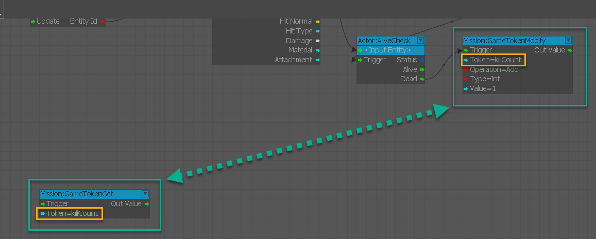
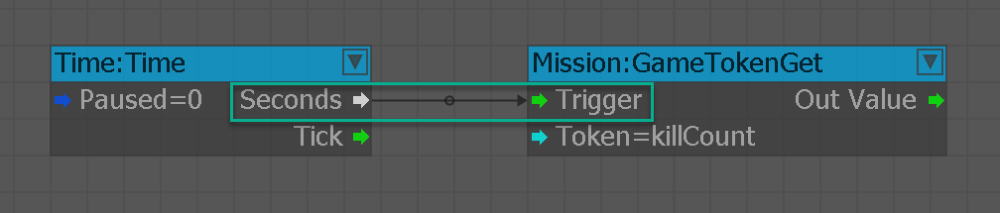
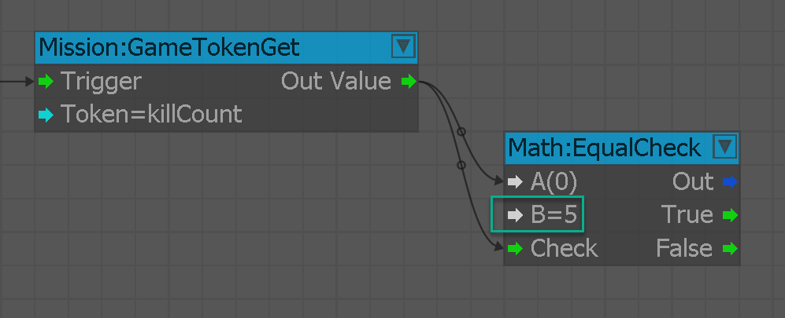
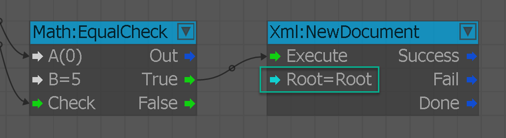
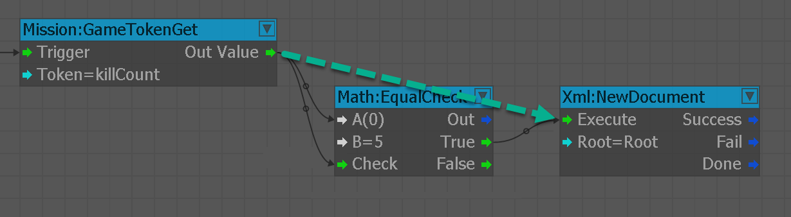
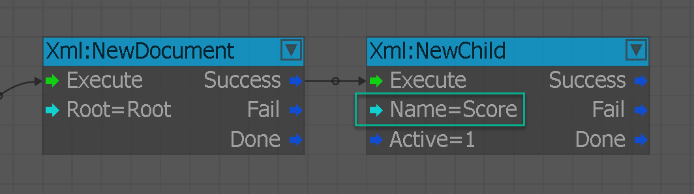
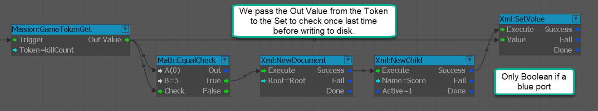
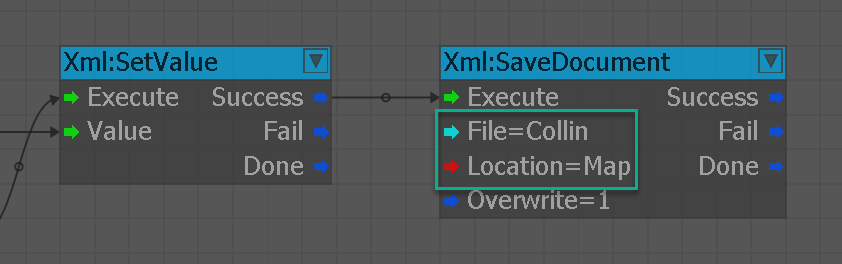
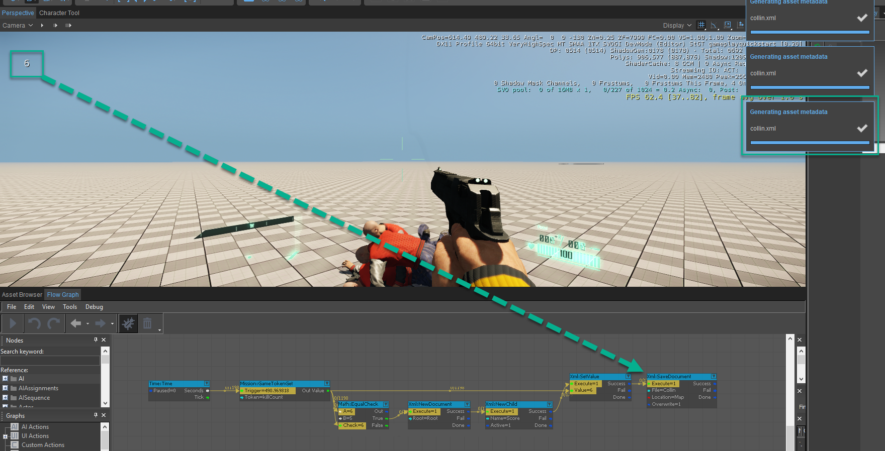

Where can we save our XML out to?
Now that we created a Kill Counter and GameToken in the previous chapter, 7 - Counting Kills, we can look at how we can take that variable and write it out to .xml. That way, we can retrieve it for external reference or even for when the next time the game loads.
In this lesson we will house the .xml in the Levels folder as it is the most easily accessible and is generally one of the most common folders to be copied over for all scenarios to work. Likewise you also have the ability to save the .xml at the following locations:
- Map - This is the default location in the levels folder
- Game - Saves to your game directory
- Root - Saves to the engine root directory
- User - Saves to your user folder
How To Write Out To XML
You need to follow these below mentioned steps to successfully create an .xml from Flow Graph:
- Create a Time:Time node, call up a Mission:GameTokenGet node and add the killCount Graph Token we made earlier.
- Connect the second output port to fire every second, not every frame, into the Trigger port of the Mission:GameTokenGet node.
- Run an Math:EqualCheck node with the killCount value run into the A port of the node and a value of 3 added to the B port, alongside having the Out Value port running to the Check port of the EqualCheck node.
- Create an XML:NewDocument node and pass the True output port from the EqualsCheck node into the Execute of the XML:NewDocument node.
- Add an XML:NewChild node to add the attribute of Score to my document by feeding the Success output port of the XML:NewDocument node.
- Set the value once more by taking the Out Value from the Mission:GameTokenGet node early on and pass this into a Value input port of a XML:SetValue node. Connect the Success port of the XML:NewChild into the Execute of the XML:SetValue node.
- Create an XML:SaveDocument node and connect the Success to the Execute ports. Name the document whatever you wish and keep in mind the locations listed above.
- Hop into the Game Mode now (Ctrl + G) and kill 3 AI that spawn; the XML will be written to your Level folder.
Step 1

Step 2

Step 3

Step 4-1

Step 4-2

Step 5

Step 6

Step 7

Step 8
